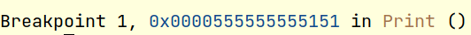

Welcome to the course "System Programming in C". This course mainly discusses how to use C language for system-level software development. C language is a process - oriented, abstract general programming language, widely used in low-level development. C language can compile and process low-level memory in a simple way. Through this course, you will learn to use CLion for project development and debugging, and cmake for compiling your C language projects. More importantly, you will use C for low-level system software development, such as realize a classic Linux shell and debugger GDB, in the following courses.
We hope that by studying the above, you will have mastered the basic syntax of C and gained a deeper understanding of system-level programming.
There are 5 experiments in this course, which are:
each of which has a period of 2 weeks, that is, you need to submit your code within 2 weeks after the experiment is set up.
This document is a description of the installation of the experimental environment for this course. In order to reduce errors other than the experiment, please refer to the instructions in the document to configure the required experiment environment on your computer.
When you finished the assignment, zip your code files with the file name student ID-assignment1.zip (e.g SA19225111-assignment0.zip) and submit it to the Postgraduate Information Platform. The deadline is TBA (Beijing time). Any late submission will NOT be accepted.
All experiments in this course are required to be completed on a Linux system. If you are a Windows or Mac OS user, please refer to the following steps to install a Linux virtual machine:
1. Download the Ubuntu system image: It is recommended to use a stable release version. We recommend that you install Ubuntu18 or above. You can visit the official Ubuntu website to download the system mirror, or visit the domestic mirror website to download the system mirror. Generally speaking, the download speed of the latter is more fast;
2. Install VMware or VirtualBox on your computer: Both software can be used to install and manage your virtual machine system. For VMware software, please refer to the blog to install Ubuntu image; for VirtualBox software, please refer to the blog to install Ubuntu image.
GCC is a free software released under the GPL license and is also a key part of the GNU project. The original intention of GCC was to write a compiler for the GNU operating system, and it has been adopted as a standard compiler by most Unix-like operating systems (such as Linux, BSD, MacOS X, etc.). For more detailed information about GCC, you can read its official documentation.
(1) Enter the command following in the terminal, you can install the GCC compiler:
apt-get install gcc
(2) Enter the command following in the terminal, when the GCC version information is printed out, the installation is successful:
gcc --version
The following demonstrates the simple usage of the GCC compiler, you can read the official documentation for more usage:
(1) Use vim (or other editors) to write the hello.c program as shown below:
#include <stdio.h>
void Print(void){
printf("Hello,world!\n");
}
int main(){
Print();
return 0;
}
(2) Enter the command in the terminal:
gcc hello.c -o hellothe source file can be compiled into an executable file with the specified file name hello in green color, As follows:
(3) hello is a compiled executable file. Enter the command: ./hello in the terminal to run the program.
GDB is an excellent command line debugging tool on UNIX and UNIX-like systems. By using GDB, you can debug the program and check various system data such as variables, registers, and memory status during the running of the program. For more detailed information of GDB, you can read its official documentation.
(1) Open the terminal and enter the command to install the GDB debugging tool:
sudo apt-get install gdb
(2) Enter the command in the terminal: gdb --version When the GDB version is printed out, the installation is successful.
The following demonstrates the simple usage of GDB, you can read the official documentation for more usage:
(1) Take the hello.c of the above GCC part as the source code, and compile the executable file hello through gcc;
(2) The debugging object of GDB is the executable file hello instead of the source code. Enter the command:
gdb helloin the terminal to start the gdb debugging process;
(3) Enter break or the abbreviation b in GDB, followed by a sentence, to tag a break point. Here we give a break to the Print function: break Print. As shown below:
break Print
(4) Enter the command run to run the program in GDB. It can be found that the program execution is suspended at the breakpoint. As shown below:
(5) Input the command continue or the abbreviation c to let the program continue to run. Enter the command quit to exit the GDB debugging interface.
CMake is a cross-platform installation (compilation) tool, you can use simple sentences to describe the installation (compilation) process of all platforms. In this course, you need to manually write CMake files in CLion. For more detailed content of CMake, you can read its official documentation.
There are many ways to install cmake on Linux. You can enter the command in the terminal:
sudo apt-get install cmake, and follow the prompts to install cmake. Enter the command
cmake--versionto check if you have installed sucessfully.
Let us take the source program hello.c in the above GCC part as the object to demonstrate the simple use of cmake.
(1) In the same directory, write the CMakeLists.txt file, which describes the compilation process. As follows:
#cmake version
cmake_minimum_required(VERSION 2.8)
#project name
project(HELLO)
#compiler target and source item
add_executable(hello hello.c)
(2) Enter the command:
cmake .in the terminal to generate a Makefile. As follows:
(3) Enter the command make in the terminal, and you can observe the compilation process, result in generating the executable program hello.
CLion is a cross-platform IDE (Intergrated development environment) designed for C/C++. It contains many intelligent functions, such as error prompts, code completion, automatic generation of makelist files, etc., which greatly improves Developer productivity.
Since CLion is a paid software, before the installation,we recommend you go to the official website of CLion and use your USTC email to register an accountant. This will give you a one-year of CLion Professional Edition Eligibility for free use.
On the ubuntu system, you have multiple ways to install CLion. We give 3 ways, just choose the one that suits you for reference. We recommend using method one, which is the easiest.
Method 1: Use ubuntu's built-in application store (ubuntu software store) to download and install, search for CLion, and download it;
Method 2: Install CLion through the terminal. Enter the command
sudo snap install clion --classicin the terminal and follow the prompts to install.
Method 3:
(1) Download the installation package file from the CLion official website;
(2) Enter the command in the terminal to create a new directory for installing CLion in this directory, such as:
sudo mkdir /opt/clion
(3) Decompress the downloaded compressed file to the /opt/clion directory. Enter the command in the terminal:
sudo tar -zxvf CLion-2020.1.1.tar.gz -C /opt/clion
(4) Start CLion. Enter the command following in the terminal to start:
sh /opt/clion/clion-2020.1.1/bin/clion.sh
You can visit the tutorial given on its official website to quickly get started with CLion.
Happy hacking!